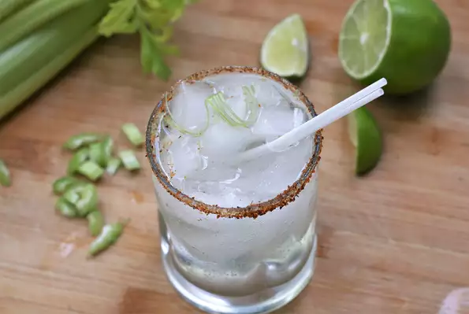

Celerita

Description
Use Juli's Any Seltzer Cocktail Formula from our magazine to make this
celerita. Turn flavored bubbly water or hard seltzer into a cocktail for
two in no time flat with this easy recipe. Garnish this with salt and
chipotle pepper or Hatch chile powder on the rim and a leafy celery stalk.
Ingredients
- 4 tablespoons choppped celery
- 1 teaspoon white sugar
- 3 ounches tequila
- 1 (12 fluid ounce) can lime-flavored seltzer water
Steps
- Muddle Celery & sugar together in a mixing glass until crushed.
- Add tequila and Stir to dessolve the sugar.
- Strain into 2 ice-filled Collins or rocks glasses
- Top with Seltzer.
- Enjoy!
back